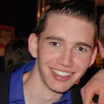

<div class="about-container">
    <div class="container main-content bg-white-opac ">
        <h1>Mezelf</h1>
        <h2>Wie ben ik</h2>
        
        <p>
            Ik ben Logan Dupont, geboren te Gent op 18 juli 1994. Ik ben opgegroeid in Zottegem, Oost-Vlaanderen waar mijn familie nog
            steeds woont en waar ik achter de schoolbanken heb gezeten. In 2012 studeerde ik af in Wetenschappen-Wiskunde
            op het O.-L.-Vrouwcollege Campus Bevegem. In datzelfde jaar begon ik aan de richting 'Toegepaste Informatica'
            aan de Hogeschool Gent, die me meteen goed lag.
        </p>
        <p>
            Tijdens deze opleiding heb ik verscheidene zaken geleerd, die we dan elk jaar mochten verwerken in een project. Al deze projecten
            zijn terug te vinden op <a target="_blank" href="https://github.com/LoganDupont">Github</a> en onder
            <a href="#/achievements">Achievements</a>. Het bevat namelijk allemaal realisaties waar ik heel trots op ben.
            Natuurlijk zouden de meeste projecten niet gelukt zijn zonder de hulp van mijn teamleden die ik één voor één
            heel erg dankbaar ben.
        </p>

        <h2>Persoonlijkheid</h2>
        <h3>MBTI (Myers-Briggs Type Indicator)</h3>
        <p>
            Mijn MBTI resultaat is <b>"ISTJ"</b>, wat staat voor "Introversion, Sensing, Thinking en Judging." "Introversion"
            betekent dat ik mijn persoonlijke energie vooral kan opladen door (even) alleen te zijn. "Sensing" betekent dat
            ik bij het verkrijgen van nieuwe informatie vooral aandacht schenk aan het observeren en stapsgewijs werken.
            "Thinking" betekent dat ik bij het nemen van een beslissing graag logisch nadenk en alle voor- en nadelen afweeg.
            Tenslotte betekent "Judging" dat ik het liefst werk volgens een planning, snel beslissingen maak en mij concentreer
            op wat er gedaan moet worden.
        </p>
        <h3>Enneagram persoonlijkheidstest</h3>
        <p>
            Deze test verdeelt mensen in één of twee persoonlijkheidstypen. Ik kreeg als resultaat <b>1w9</b>. Dit betekent
            dat ik een "Hervormer" ben, met een vleugel van "Vredestichter". Deze types passen wel bij mij, zeker "de hervormer",
            want ik ben wel wat perfectionistisch. Ik ga namelijk vaak op zoek naar het beter maken van dingen en probeer
            altijd betere punten te halen of het beste project te maken omdat ik gedreven en ambitieus ben. Ook "de vredestichter"
            past bij mij; ik probeer altijd het beste in anderen te zien en ben geneigd om conflicten tot elke prijs te vermijden
            indien dit invloed zou kunnen hebben op het teamwerk. Daarnaast is een "Vredestichter" een algemeen betrouwbaar
            en sympathiek individu.
        </p>
    </div>
</div>